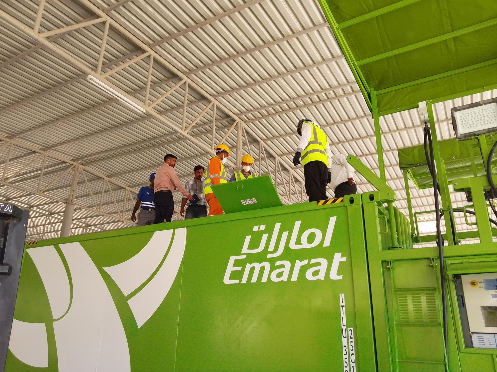
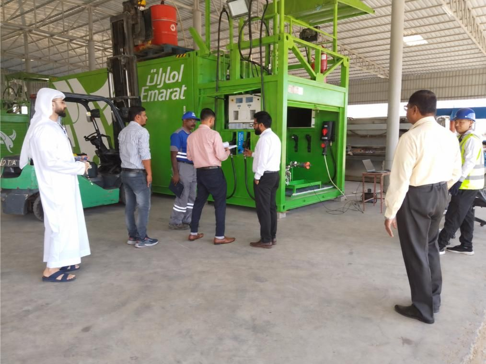
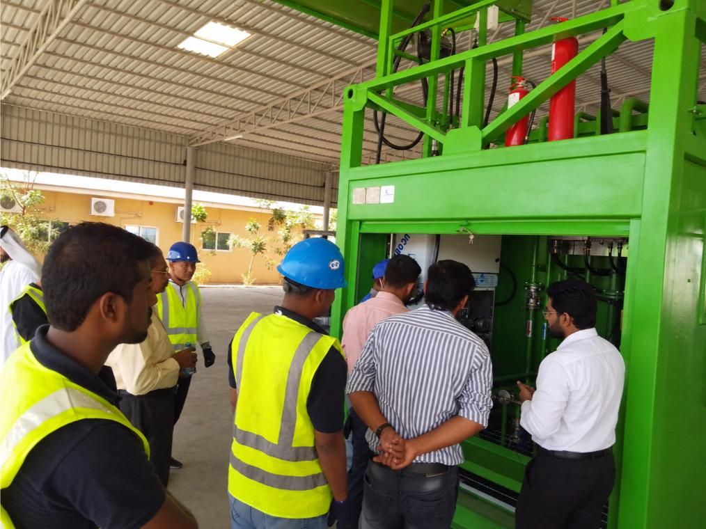
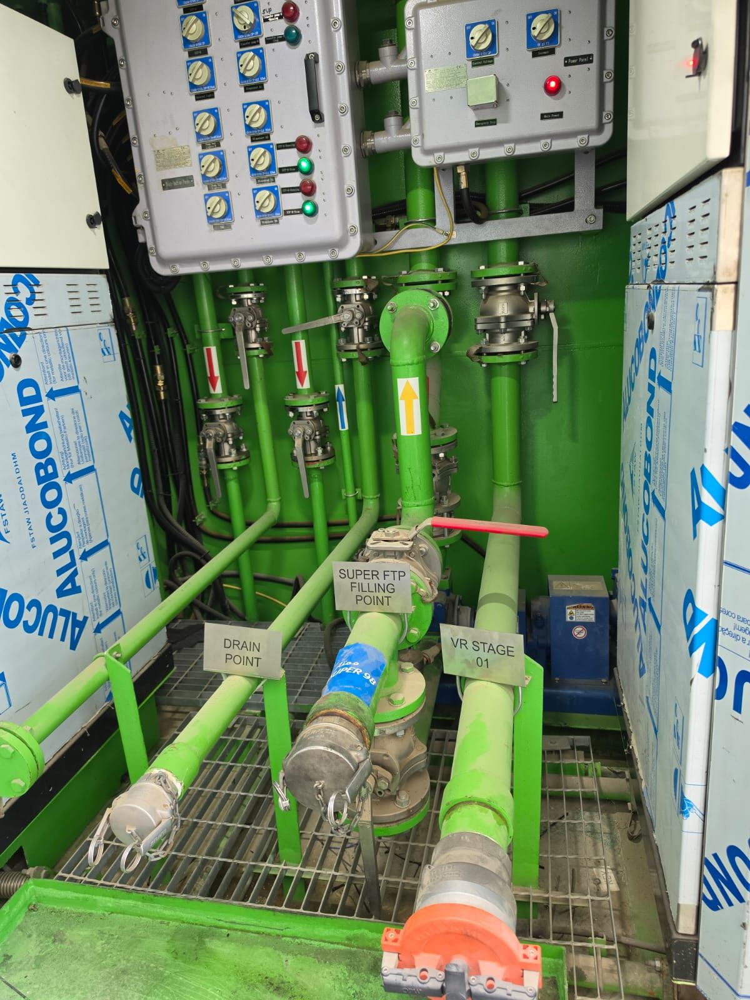
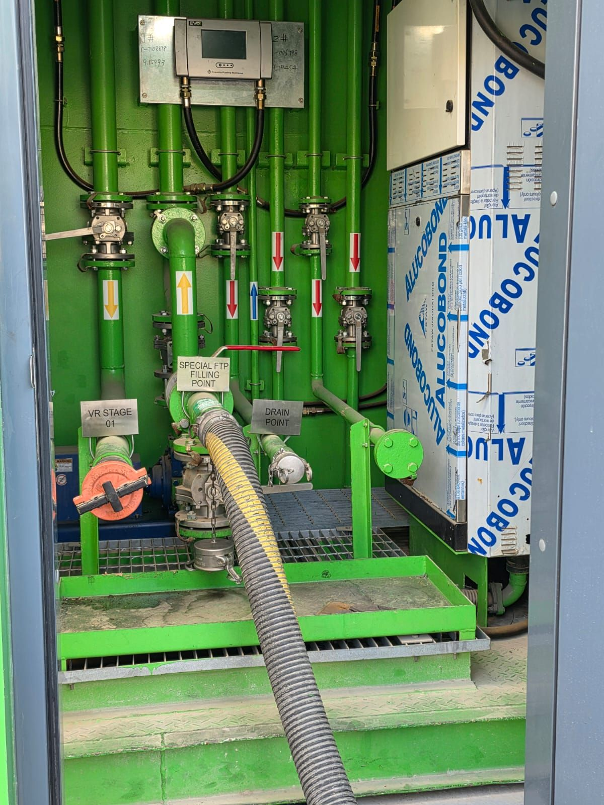
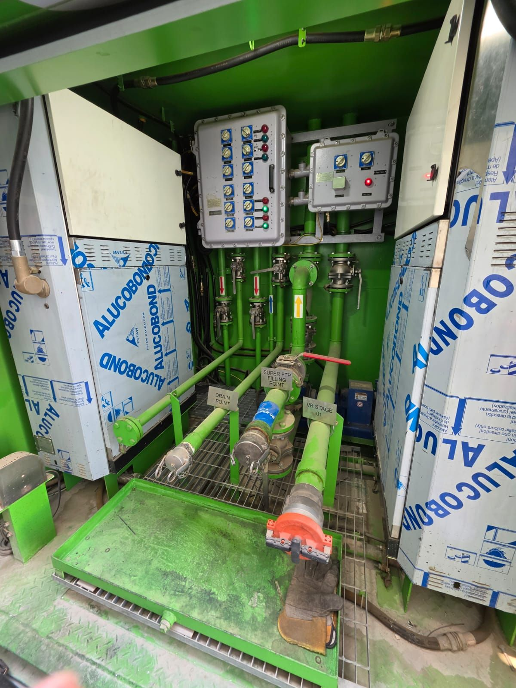

Compressor Packages
Package assemblies, process piping, lubrication, seal systems, base frames and manufacturing support.
A curated place for genuine project photographs, 3D models, GA drawings, fabrication evidence and FAT/SAT records. Confidential employer and customer-controlled documents are kept out of the public portfolio.
F-01 — Emarat 40 FT dual-compartment mobile fueling unit, from commissioning and customer inspection to the piping inside the equipment cabinet.






Package assemblies, process piping, lubrication, seal systems, base frames and manufacturing support.
Air treatment train, receivers, PSA generator, nitrogen buffer and instrumentation interfaces.
Mobile fueling units, portable fuel stations, dispensing equipment, vapor recovery and safety systems.
Fuel and process tank design evidence, nozzle arrangements, supports, dimensions and fabrication details.
Pump, equipment-support, tank, instrument and fuel skids, structural frames and platforms.
Move from design and drawings into procurement, manufacturing, inspection, FAT and SAT involvement.
4-stage N₂ compander package · Korea
C-021-stage LNG boil-off gas compressor · China
C-03Complete compressor package redesign · Singapore
C-042 compressors + 1 expander · China
C-053-stage steam-turbine-driven air compressor · China
P-01~160 Nm³/h · 99.9% N₂ purity
F-0142,600 L gross dual-compartment unit · UAE
S-01~25 representative designs · 500 L–60 KL
Translate customer requirements into a buildable mechanical/package concept and coordinated 3D arrangement.
Develop/review GA and fabrication drawings, piping interfaces, equipment connections and supporting details.
Support MTO/BOM, vendor coordination, production interfaces and manufacturing queries.
Support testing, customer inspection, punch-point closure and final package review.
Use genuine photographs to show the transition from engineering design to a physical package.
SAFE TO PUBLISH: Your own photographs, your own original non-confidential illustrations, generic engineering diagrams, and drawings cleared for public use.
REDACT BEFORE PUBLISHING: customer names, project numbers, internal drawing numbers, confidential dimensions, proprietary equipment data and controlled document identifiers when required.
DO NOT PUBLISH: confidential employer drawings, customer-controlled documents, proprietary calculations or internal documentation unless explicit permission exists.
More approved photographs can be added for compressor packages, PSA nitrogen systems, storage tanks, skids and FAT/SAT activities. Only genuine project evidence will be used; AI-generated images will not be presented as project photographs.